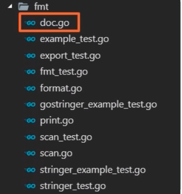
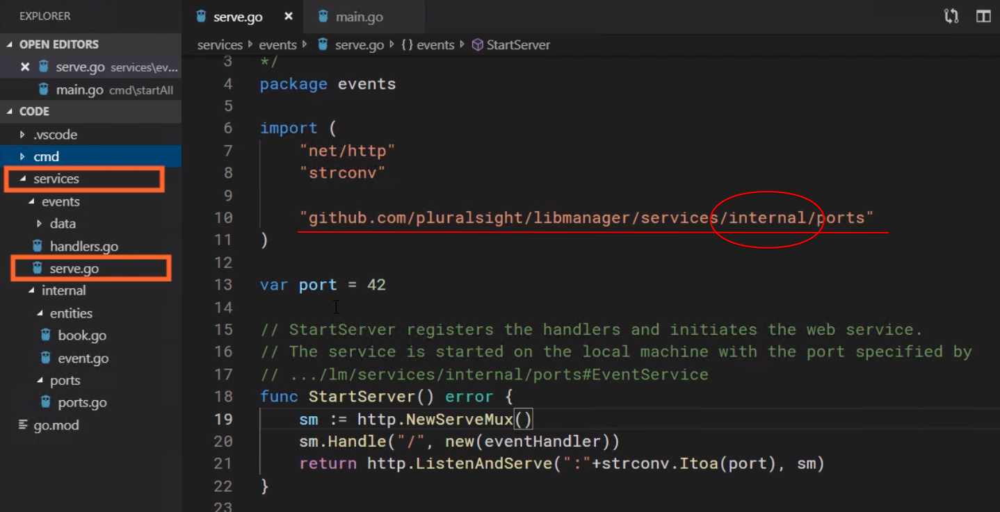
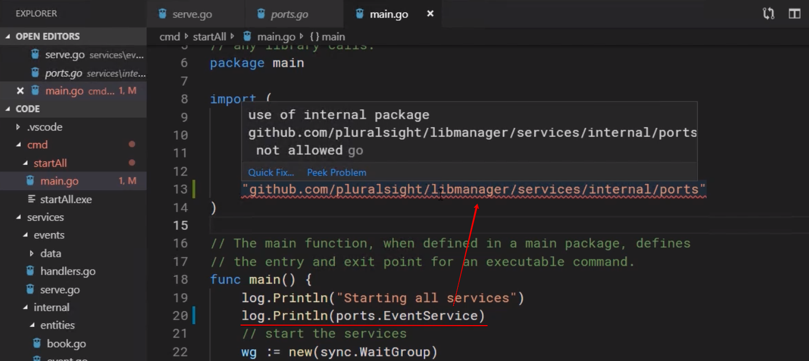
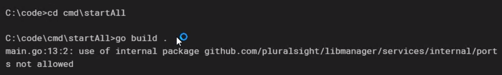

<!DOCTYPE HTML>
<html lang="">

<head><meta name="generator" content="Hexo 3.8.0">
    <!--Setting-->
    <meta charset="UTF-8">
    <meta name="viewport" content="width=device-width, user-scalable=no, initial-scale=1.0, maximum-scale=1.0, minimum-scale=1.0">
    <meta http-equiv="X-UA-Compatible" content="IE=Edge,chrome=1">
    <meta http-equiv="Cache-Control" content="no-siteapp">
    <meta http-equiv="Cache-Control" content="no-transform">
    <meta name="renderer" content="webkit|ie-comp|ie-stand">
    <meta name="apple-mobile-web-app-capable" content="William&#39;s 隨手札記">
    <meta name="apple-mobile-web-app-status-bar-style" content="black">
    <meta name="format-detection" content="telephone=no,email=no,adress=no">
    <meta name="browsermode" content="application">
    <meta name="screen-orientation" content="portrait">
    <meta name="theme-version" content="1.2.3">
    <meta name="root" content="/">
    <link rel="dns-prefetch" href="http://a10000005588.github.io">
    <!--SEO-->

<meta name="keywords" content="Golang">


<meta name="description" content="以下收錄撰寫golang package可以遵循的內容
Package 概覽一個Go Pakcage的基本元素包含了如下：

Package declaration: 基本定義，告訴develo...">


<meta name="robots" content="all">
<meta name="google" content="all">
<meta name="googlebot" content="all">
<meta name="verify" content="all">
    <!--Title-->

<title>
    
    用Golang撰寫Package的Best Practice |
    
    William&#39;s 隨手札記
</title>

<link rel="alternate" href="/atom.xml" title="William&#39;s 隨手札記" type="application/atom+xml">


<link rel="icon" href="/favicon.ico">

    

<link rel="stylesheet" href="/css/bootstrap.min.css?rev=3.3.7">
<link rel="stylesheet" href="/css/font-awesome.min.css?rev=4.7.0">
<link rel="stylesheet" href="/css/style.css?rev=@@hash">
    

</head></html>
<!--[if lte IE 8]>
<style>
    html{ font-size: 1em }
</style>
<![endif]-->
<!--[if lte IE 9]>
<div style="ie">你使用的浏览器版本过低，为了你更好的阅读体验，请更新浏览器的版本或者使用其他现代浏览器，比如Chrome、Firefox、Safari等。</div>
<![endif]-->
<body>
    <header class="main-header">
    <div class="main-header-box">
        <a class="header-avatar" href="/" title="William L.K.">
            
        </a>
        <div class="branding">
            <!--<h2 class="text-hide">Snippet主题,从未如此简单有趣</h2>-->
            
            <h2>
                Just Code It.
            </h2>
            
        </div>
    </div>
</header>
    <nav class="main-navigation">
    <div class="container">
        <div class="row">
            <div class="col-sm-12">
                <div class="navbar-header"><span class="nav-toggle-button collapsed pull-right" data-toggle="collapse" data-target="#main-menu" id="mnav">
                        <span class="sr-only"></span>
                        <i class="fa fa-bars"></i>
                    </span>
                    <a class="navbar-brand" href="http://a10000005588.github.io">
                        William&#39;s 隨手札記</a>
                </div>
                <div class="collapse navbar-collapse" id="main-menu">
                    <ul class="menu">
                        
                        <li role="presentation" class="text-center">
                            <a href="/"><i class="fa "></i>
                                最新貼文串</a>
                        </li>
                        
                        <li role="presentation" class="text-center">
                            <a href="/programming"><i class="fa "></i>
                                程式語言筆記</a>
                        </li>
                        
                        <li role="presentation" class="text-center">
                            <a href="/backend/"><i class="fa "></i>
                                Web後端工程</a>
                        </li>
                        
                        <li role="presentation" class="text-center">
                            <a href="/tools/"><i class="fa "></i>
                                工具使用</a>
                        </li>
                        
                        <li role="presentation" class="text-center">
                            <a href="/blockchain/"><i class="fa "></i>
                                區塊鏈</a>
                        </li>
                        
                        <li role="presentation" class="text-center">
                            <a href="/archives/"><i class="fa clock"></i>
                                貼文軌跡</a>
                        </li>
                        
                        <li role="presentation" class="text-center">
                            <a href="/about/"><i class="fa "></i>
                                關於我(=´ᴥ`)</a>
                        </li>
                        
                    </ul>
                </div>
            </div>
        </div>
    </div>
</nav>
    <section class="content-wrap">
        <div class="container">
            <div class="row">
                <main class="col-md-8 main-content m-post">
                    <p id="process"></p>
<article class="post">
    <div class="post-head">
        <h1 id="用Golang撰寫Package的Best Practice">
            
            用Golang撰寫Package的Best Practice
            
        </h1>
        <div class="post-meta">
    
    <span class="categories-meta fa-wrap">
        <i class="fa fa-folder-open-o"></i>
        
    </span>
    
    
    <span class="fa-wrap">
        <i class="fa fa-tags"></i>
        <span class="tags-meta">
            
            <a class="tag-link" href="/tags/Golang/">Golang</a>
            
        </span>
    </span>
    
    
    
    <span class="fa-wrap">
        <i class="fa fa-clock-o"></i>
        <span class="date-meta">
            2021/02/15</span>
    </span>
    
    
</div>
        
        
    </div>
    
    <div class="post-body post-content">
        <p>以下收錄撰寫golang package可以遵循的內容</p>
<h2 id="Package-概覽"><a href="#Package-概覽" class="headerlink" title="Package 概覽"></a>Package 概覽</h2><p>一個Go Pakcage的基本元素包含了如下：</p>
<ul>
<li>Package declaration: 基本定義，告訴developer package的功能是什麼</li>
<li>Documentation: 提供Package內所包含的function是什麼，要如何使用</li>
<li>Imports: 如何引入pakcage內的function</li>
<li>var &amp; const blocks: 使用的變數宣告</li>
<li>Types &amp; interfaces: 定義package內會使用的型態以及介面</li>
<li>Functions: functions的實作<h3 id="Package的範圍：一個資料夾內的所有-go檔案，其他除外"><a href="#Package的範圍：一個資料夾內的所有-go檔案，其他除外" class="headerlink" title="Package的範圍：一個資料夾內的所有.go檔案，其他除外"></a>Package的範圍：一個資料夾內的所有<code>.go</code>檔案，其他除外</h3>基本上一個Go Package只會包含單一目錄內所有的Go Source.</li>
</ul>
<p>舉個例子</p>
<figure class="highlight plain"><table><tr><td class="gutter"><pre><span class="line">1</span><br><span class="line">2</span><br><span class="line">3</span><br><span class="line">4</span><br><span class="line">5</span><br></pre></td><td class="code"><pre><span class="line">---services</span><br><span class="line"> |--- events (Package)</span><br><span class="line">   |-- data (資料夾)</span><br><span class="line">   |-- handlers.go</span><br><span class="line">   |-- serve.go</span><br></pre></td></tr></table></figure>
<p>上面<code>events</code>這個package，只會包含 <code>handlers.go</code> 以及 <code>serve.go</code> 這兩隻檔案的內容，<code>data</code>資料夾會被排除</p>
<h2 id="Package種類"><a href="#Package種類" class="headerlink" title="Package種類"></a>Package種類</h2><h3 id="Library-Packages"><a href="#Library-Packages" class="headerlink" title="Library Packages"></a>Library Packages</h3><p>定義Golang Package的內容，提供相同功能性的function。</p>
<figure class="highlight go"><table><tr><td class="gutter"><pre><span class="line">1</span><br><span class="line">2</span><br><span class="line">3</span><br><span class="line">4</span><br></pre></td><td class="code"><pre><span class="line"><span class="comment">// .../services</span></span><br><span class="line"><span class="keyword">package</span> services</span><br><span class="line"></span><br><span class="line">...</span><br></pre></td></tr></table></figure>
<ul>
<li>Library Pakcage通常被其他的package所引入進來</li>
<li>Library Package的名稱必須要跟自己的資料夾名稱一樣</li>
<li>pakcage內的最好是提供相似的功能<h3 id="Main-Package"><a href="#Main-Package" class="headerlink" title="Main Package"></a>Main Package</h3></li>
</ul>
<p>定義了Application的進入點，程式要啟動就會是從main package開始，注重在app的設置以及初始化的邏輯。</p>
<figure class="highlight go"><table><tr><td class="gutter"><pre><span class="line">1</span><br><span class="line">2</span><br><span class="line">3</span><br></pre></td><td class="code"><pre><span class="line"><span class="keyword">package</span> main</span><br><span class="line"></span><br><span class="line"><span class="function"><span class="keyword">func</span> <span class="title">main</span><span class="params">()</span></span> &#123;&#125;</span><br></pre></td></tr></table></figure>
<ul>
<li>包含 main() function</li>
<li>可以在任何的資料夾</li>
</ul>
<h3 id="範例"><a href="#範例" class="headerlink" title="範例"></a>範例</h3><p><code>http</code> package: <a href="https://golang.org/pkg/net/http/" target="_blank" rel="noopener">https://golang.org/pkg/net/http/</a></p>
<ul>
<li>Constants: 定義常數內容</li>
</ul>
<figure class="highlight go"><table><tr><td class="gutter"><pre><span class="line">1</span><br><span class="line">2</span><br><span class="line">3</span><br><span class="line">4</span><br><span class="line">5</span><br><span class="line">6</span><br><span class="line">7</span><br><span class="line">8</span><br><span class="line">9</span><br><span class="line">10</span><br><span class="line">11</span><br><span class="line">12</span><br></pre></td><td class="code"><pre><span class="line"><span class="keyword">const</span> (</span><br><span class="line">    StatusContinue           = <span class="number">100</span> <span class="comment">// RFC 7231, 6.2.1</span></span><br><span class="line">    StatusSwitchingProtocols = <span class="number">101</span> <span class="comment">// RFC 7231, 6.2.2</span></span><br><span class="line">    StatusProcessing         = <span class="number">102</span> <span class="comment">// RFC 2518, 10.1</span></span><br><span class="line">    StatusEarlyHints         = <span class="number">103</span> <span class="comment">// RFC 8297</span></span><br><span class="line"></span><br><span class="line">    StatusOK                   = <span class="number">200</span> <span class="comment">// RFC 7231, 6.3.1</span></span><br><span class="line">    StatusCreated              = <span class="number">201</span> <span class="comment">// RFC 7231, 6.3.2</span></span><br><span class="line">    StatusAccepted             = <span class="number">202</span> <span class="comment">// RFC 7231, 6.3.3</span></span><br><span class="line">    StatusNonAuthoritativeInfo = <span class="number">203</span> <span class="comment">// RFC 7231, 6.3.4</span></span><br><span class="line">    ...</span><br><span class="line">)</span><br></pre></td></tr></table></figure>
<ul>
<li><p>Variables: 定義變數內容，且給予說明</p>
<figure class="highlight go"><table><tr><td class="gutter"><pre><span class="line">1</span><br><span class="line">2</span><br><span class="line">3</span><br><span class="line">4</span><br><span class="line">5</span><br><span class="line">6</span><br><span class="line">7</span><br><span class="line">8</span><br><span class="line">9</span><br><span class="line">10</span><br><span class="line">11</span><br><span class="line">12</span><br></pre></td><td class="code"><pre><span class="line"><span class="keyword">var</span> (</span><br><span class="line">    <span class="comment">// ErrNotSupported is returned by the Push method of Pusher</span></span><br><span class="line">    <span class="comment">// implementations to indicate that HTTP/2 Push support is not</span></span><br><span class="line">    <span class="comment">// available.</span></span><br><span class="line">    ErrNotSupported = &amp;ProtocolError&#123;<span class="string">"feature not supported"</span>&#125;</span><br><span class="line"></span><br><span class="line">    <span class="comment">// Deprecated: ErrUnexpectedTrailer is no longer returned by</span></span><br><span class="line">    <span class="comment">// anything in the net/http package. Callers should not</span></span><br><span class="line">    <span class="comment">// compare errors against this variable.</span></span><br><span class="line">    ErrUnexpectedTrailer = &amp;ProtocolError&#123;<span class="string">"trailer header without chunked transfer encoding"</span>&#125;</span><br><span class="line">    ...</span><br><span class="line">)</span><br></pre></td></tr></table></figure>
</li>
<li><p>Types: 定義客製化型態，並給予說明</p>
</li>
</ul>
<figure class="highlight go"><table><tr><td class="gutter"><pre><span class="line">1</span><br><span class="line">2</span><br><span class="line">3</span><br><span class="line">4</span><br><span class="line">5</span><br><span class="line">6</span><br><span class="line">7</span><br></pre></td><td class="code"><pre><span class="line"><span class="comment">// A Client is an HTTP client. Its zero value (DefaultClient) is a usable client that uses DefaultTransport. ...</span></span><br><span class="line"><span class="keyword">type</span> Client <span class="keyword">struct</span> &#123;</span><br><span class="line">    <span class="comment">// Transport specifies the mechanism by which individual</span></span><br><span class="line">    <span class="comment">// HTTP requests are made.</span></span><br><span class="line">    <span class="comment">// If nil, DefaultTransport is used.</span></span><br><span class="line">    Transport RoundTripper</span><br><span class="line">    ...</span><br></pre></td></tr></table></figure>
<p>也提供了Clinet形態的初始化變數設置，不用一直自行初始化<br><figure class="highlight go"><table><tr><td class="gutter"><pre><span class="line">1</span><br><span class="line">2</span><br></pre></td><td class="code"><pre><span class="line"><span class="comment">// DefaultClient is the default Client and is used by Get, Head, and Post.</span></span><br><span class="line"><span class="keyword">var</span> DefaultClient = &amp;Client&#123;&#125;</span><br></pre></td></tr></table></figure></p>
<ul>
<li>Function: 定義function內容，並添加說明</li>
</ul>
<figure class="highlight go"><table><tr><td class="gutter"><pre><span class="line">1</span><br><span class="line">2</span><br><span class="line">3</span><br></pre></td><td class="code"><pre><span class="line"><span class="comment">// CanonicalHeaderKey returns the canonical format of the header key s. The canonicalization converts the first letter and any letter following a hyphen to upper case; the rest are converted to lowercase. For example, the canonical key for "accept-encoding" is "Accept-Encoding". If s contains a space or invalid header field bytes, it is returned without modifications.</span></span><br><span class="line"></span><br><span class="line"><span class="function"><span class="keyword">func</span> <span class="title">CanonicalHeaderKey</span></span> &#123;...&#125;</span><br></pre></td></tr></table></figure>
<h2 id="Pakcage-的生命週期"><a href="#Pakcage-的生命週期" class="headerlink" title="Pakcage 的生命週期"></a>Pakcage 的生命週期</h2><ol>
<li>Import 所需要的package</li>
<li>將initial value設置在variables</li>
<li>呼叫 <code>init()</code> 方法，執行初始化該package的動作</li>
</ol>
<blockquote>
<p>注意，無法直接呼叫 <code>init()</code> ，該方法只能在golang的compiler時期被golang呼叫執行。</p>
</blockquote>
<h3 id="範例-1"><a href="#範例-1" class="headerlink" title="範例"></a>範例</h3><p>假如有個目錄如下<br><figure class="highlight plain"><table><tr><td class="gutter"><pre><span class="line">1</span><br><span class="line">2</span><br><span class="line">3</span><br><span class="line">4</span><br><span class="line">5</span><br><span class="line">6</span><br><span class="line">7</span><br><span class="line">8</span><br><span class="line">9</span><br></pre></td><td class="code"><pre><span class="line">--- cmd</span><br><span class="line"> |--- startAll</span><br><span class="line"> |   |- main.go</span><br><span class="line"> |--- services</span><br><span class="line">     |- handlers.go</span><br><span class="line">     |- serve.go</span><br><span class="line"> |--- internal</span><br><span class="line">     |--- ports</span><br><span class="line">        |--- ports.go</span><br></pre></td></tr></table></figure></p>
<p>若 <code>main.go</code> import <code>services</code> 這個package</p>
<figure class="highlight go"><table><tr><td class="gutter"><pre><span class="line">1</span><br><span class="line">2</span><br><span class="line">3</span><br><span class="line">4</span><br><span class="line">5</span><br><span class="line">6</span><br><span class="line">7</span><br><span class="line">8</span><br><span class="line">9</span><br><span class="line">10</span><br><span class="line">11</span><br><span class="line">12</span><br><span class="line">13</span><br><span class="line">14</span><br><span class="line">15</span><br><span class="line">16</span><br><span class="line">17</span><br><span class="line">18</span><br><span class="line">19</span><br><span class="line">20</span><br><span class="line">21</span><br><span class="line">22</span><br><span class="line">23</span><br><span class="line">24</span><br><span class="line">25</span><br><span class="line">26</span><br><span class="line">27</span><br><span class="line">28</span><br><span class="line">29</span><br><span class="line">30</span><br><span class="line">31</span><br><span class="line">32</span><br><span class="line">33</span><br></pre></td><td class="code"><pre><span class="line"><span class="comment">/*</span></span><br><span class="line"><span class="comment"> Package events provides a webservice that manages the libary's special events.</span></span><br><span class="line"><span class="comment">*/</span></span><br><span class="line"><span class="keyword">package</span> events</span><br><span class="line"></span><br><span class="line"><span class="keyword">import</span> (</span><br><span class="line">	<span class="string">"fmt"</span></span><br><span class="line">	<span class="string">"net/http"</span></span><br><span class="line">	<span class="string">"strconv"</span></span><br><span class="line"></span><br><span class="line">	<span class="string">"github.com/pluralsight/libmanager/services/internal/ports"</span></span><br><span class="line">)</span><br><span class="line"></span><br><span class="line"><span class="keyword">var</span> port = <span class="number">42</span></span><br><span class="line"></span><br><span class="line"><span class="comment">// StartServer registers the handlers and initiates the web service.</span></span><br><span class="line"><span class="comment">// The service is started on the local machine with the port specified by</span></span><br><span class="line"><span class="comment">// .../lm/services/internal/ports#EventService</span></span><br><span class="line"><span class="function"><span class="keyword">func</span> <span class="title">StartServer</span><span class="params">()</span> <span class="title">error</span></span> &#123;</span><br><span class="line">	sm := http.NewServeMux()</span><br><span class="line">	sm.Handle(<span class="string">"/"</span>, <span class="built_in">new</span>(eventHandler))</span><br><span class="line">	<span class="keyword">return</span> http.ListenAndServe(<span class="string">":"</span>+strconv.Itoa(port), sm)</span><br><span class="line">&#125;</span><br><span class="line"></span><br><span class="line"><span class="function"><span class="keyword">func</span> <span class="title">init</span><span class="params">()</span></span> &#123;</span><br><span class="line">	fmt.Println(<span class="string">"serve.go 1"</span>, port)</span><br><span class="line">	port = ports.EventService</span><br><span class="line">	fmt.Println(<span class="string">"serve.go 2"</span>, port)</span><br><span class="line">&#125;</span><br><span class="line"></span><br><span class="line"><span class="function"><span class="keyword">func</span> <span class="title">init</span><span class="params">()</span></span> &#123;</span><br><span class="line">	fmt.Println(<span class="string">"second init in serve.go"</span>)</span><br><span class="line">&#125;</span><br></pre></td></tr></table></figure>
<blockquote>
<p>可以看到init() 可以多次宣告</p>
</blockquote>
<p>此時<code>main.go</code>呼叫<code>services</code> pakcage內的<code>startServer</code> function</p>
<figure class="highlight go"><table><tr><td class="gutter"><pre><span class="line">1</span><br><span class="line">2</span><br><span class="line">3</span><br><span class="line">4</span><br><span class="line">5</span><br><span class="line">6</span><br><span class="line">7</span><br><span class="line">8</span><br><span class="line">9</span><br><span class="line">10</span><br><span class="line">11</span><br><span class="line">12</span><br><span class="line">13</span><br><span class="line">14</span><br><span class="line">15</span><br><span class="line">16</span><br><span class="line">17</span><br><span class="line">18</span><br><span class="line">19</span><br><span class="line">20</span><br><span class="line">21</span><br><span class="line">22</span><br><span class="line">23</span><br><span class="line">24</span><br><span class="line">25</span><br><span class="line">26</span><br><span class="line">27</span><br><span class="line">28</span><br><span class="line">29</span><br><span class="line">30</span><br><span class="line">31</span><br><span class="line">32</span><br><span class="line">33</span><br><span class="line">34</span><br><span class="line">35</span><br><span class="line">36</span><br><span class="line">37</span><br><span class="line">38</span><br><span class="line">39</span><br><span class="line">40</span><br><span class="line">41</span><br></pre></td><td class="code"><pre><span class="line"><span class="comment">// Package main is typically used to define a single, executable command and its associated logic.</span></span><br><span class="line"><span class="comment">//</span></span><br><span class="line"><span class="comment">// Functions in the main package should normally avoid containing business logic; they</span></span><br><span class="line"><span class="comment">// should focus on initializing the application and handling any errors that are returned by</span></span><br><span class="line"><span class="comment">// any library calls.</span></span><br><span class="line"><span class="keyword">package</span> main</span><br><span class="line"></span><br><span class="line"><span class="keyword">import</span> (</span><br><span class="line">	<span class="string">"fmt"</span></span><br><span class="line">	<span class="string">"log"</span></span><br><span class="line">	<span class="string">"sync"</span></span><br><span class="line"></span><br><span class="line">	<span class="string">"github.com/pluralsight/libmanager/services/events"</span></span><br><span class="line">)</span><br><span class="line"></span><br><span class="line"><span class="function"><span class="keyword">func</span> <span class="title">init</span><span class="params">()</span></span> &#123;</span><br><span class="line">	fmt.Println(<span class="string">"init in main.go"</span>)</span><br><span class="line">&#125;</span><br><span class="line"></span><br><span class="line"><span class="comment">// The main function, when defined in a main package, defines</span></span><br><span class="line"><span class="comment">// the entry and exit point for an executable command.</span></span><br><span class="line"><span class="function"><span class="keyword">func</span> <span class="title">main</span><span class="params">()</span></span> &#123;</span><br><span class="line">	log.Println(<span class="string">"Starting all services"</span>)</span><br><span class="line"></span><br><span class="line">	<span class="comment">// start the services</span></span><br><span class="line">	wg := <span class="built_in">new</span>(sync.WaitGroup)</span><br><span class="line">	wg.Add(<span class="number">1</span>)</span><br><span class="line">  <span class="comment">// 執行 events package內的StartServer方法</span></span><br><span class="line">	<span class="keyword">go</span> startServer(wg, events.StartServer)</span><br><span class="line">	wg.Wait()</span><br><span class="line">	log.Println(<span class="string">"All services stopped"</span>)</span><br><span class="line">&#125;</span><br><span class="line"></span><br><span class="line"><span class="comment">// startServer is a function in the main package that supports the command.</span></span><br><span class="line"><span class="function"><span class="keyword">func</span> <span class="title">startServer</span><span class="params">(wg *sync.WaitGroup, startFunc <span class="keyword">func</span>()</span> <span class="title">error</span>)</span> &#123;</span><br><span class="line">	err := startFunc()</span><br><span class="line">	wg.Done()</span><br><span class="line">	<span class="keyword">if</span> err != <span class="literal">nil</span> &#123;</span><br><span class="line">		log.Fatal(err)</span><br><span class="line">	&#125;</span><br><span class="line">&#125;</span><br></pre></td></tr></table></figure>
<p>要注意，services import了internal內<code>ports</code> package的變數，故若呼叫了<code>main.go</code> 中的startServer，會先印出初始化的<code>port = 42</code>, 再來是透過<code>init()</code>接收到ports package的 <code>port = 3000</code></p>
<figure class="highlight plain"><table><tr><td class="gutter"><pre><span class="line">1</span><br><span class="line">2</span><br><span class="line">3</span><br><span class="line">4</span><br><span class="line">5</span><br></pre></td><td class="code"><pre><span class="line">func init() &#123;</span><br><span class="line">	fmt.Println(&quot;serve.go 1&quot;, port)</span><br><span class="line">	port = ports.EventService</span><br><span class="line">	fmt.Println(&quot;serve.go 2&quot;, port)</span><br><span class="line">&#125;</span><br></pre></td></tr></table></figure>
<p>印出如下<br><figure class="highlight plain"><table><tr><td class="gutter"><pre><span class="line">1</span><br><span class="line">2</span><br><span class="line">3</span><br></pre></td><td class="code"><pre><span class="line">serve.go 1 42</span><br><span class="line">serve.go 2 3000</span><br><span class="line">second init in serve.go</span><br></pre></td></tr></table></figure></p>
<h2 id="Pakcage-存取範疇"><a href="#Pakcage-存取範疇" class="headerlink" title="Pakcage 存取範疇"></a>Pakcage 存取範疇</h2><ul>
<li>Public Scope<ul>
<li>以大寫宣告</li>
<li>可被專案內所有成員存取</li>
</ul>
</li>
<li>Package Scope<ul>
<li>以小寫宣告</li>
<li>只能被同一個package內存取</li>
</ul>
</li>
<li>Internal Package<ul>
<li>可同時使用public-level, package-level 的成員</li>
<li>只限於父層與子層的成員存取</li>
</ul>
</li>
</ul>
<h2 id="Pakcage設計的Best-Practice"><a href="#Pakcage設計的Best-Practice" class="headerlink" title="Pakcage設計的Best Practice"></a>Pakcage設計的Best Practice</h2><h3 id="Pakcage-名稱"><a href="#Pakcage-名稱" class="headerlink" title="Pakcage 名稱"></a>Pakcage 名稱</h3><ul>
<li>儘量簡短，使用名詞</li>
<li>小寫開頭，不使用 <code>_</code>, <code></code>等特殊字元</li>
<li>別使用一般使用者會用到的變數名稱 <code>event</code>, <code>temp</code> 等名詞來命名.</li>
</ul>
<h3 id="Package-說明"><a href="#Package-說明" class="headerlink" title="Package 說明"></a>Package 說明</h3><p>一個公開的pakcage通常會包含兩個主要說明內容</p>
<ul>
<li>licensing: 使用的開放協議</li>
<li>package comment: package的功能說明</li>
<li>說明開頭應包含 package名稱，方法的話開頭會function的名稱</li>
</ul>
<p><code>helloworld/doc.go</code><br><figure class="highlight go"><table><tr><td class="gutter"><pre><span class="line">1</span><br><span class="line">2</span><br><span class="line">3</span><br><span class="line">4</span><br><span class="line">5</span><br><span class="line">6</span><br><span class="line">7</span><br></pre></td><td class="code"><pre><span class="line"><span class="comment">// Copyright 2009 The Go Authors. All rights reserved.</span></span><br><span class="line"><span class="comment">// Use of this source code is governed by sa BSD-style</span></span><br><span class="line"><span class="comment">// license that can be found in the LICENSE file</span></span><br><span class="line"></span><br><span class="line"><span class="comment">// Package helloworld implements ....</span></span><br><span class="line"></span><br><span class="line"><span class="keyword">package</span> helloworld</span><br></pre></td></tr></table></figure></p>
<p>這時使用 <code>go doc helloworld</code>，就會顯示 <code>helloworld</code> package內<code>doc.go</code>的說明</p>
<h4 id="使用-doc-go-做更複雜的說明"><a href="#使用-doc-go-做更複雜的說明" class="headerlink" title="使用 doc.go 做更複雜的說明"></a>使用 <code>doc.go</code> 做更複雜的說明</h4><p>若有太多的package敘述要呈現，通常會在<code>doc.go</code> 說明</p>
<p></p>
<h3 id="Pakcage內容的描述撰寫指引"><a href="#Pakcage內容的描述撰寫指引" class="headerlink" title="Pakcage內容的描述撰寫指引"></a>Pakcage內容的描述撰寫指引</h3><ul>
<li>避免冗余</li>
</ul>
<p>例如，下面的package名稱與function名稱都重複了，所以可以將function名稱與package重複的部分給去掉<br><figure class="highlight plain"><table><tr><td class="gutter"><pre><span class="line">1</span><br><span class="line">2</span><br></pre></td><td class="code"><pre><span class="line">http.HTTPServer -&gt; http.server</span><br><span class="line">json.JSONEncoder -&gt; json.encoder</span><br></pre></td></tr></table></figure></p>
<ul>
<li>盡量簡化</li>
</ul>
<p>例如，下面可以簡化成如下<br><figure class="highlight plain"><table><tr><td class="gutter"><pre><span class="line">1</span><br><span class="line">2</span><br></pre></td><td class="code"><pre><span class="line">time.NewTime -&gt; time.Time</span><br><span class="line">db.ConnectToDatabase -&gt; db.Connect</span><br></pre></td></tr></table></figure></p>
<h3 id="Package內容準則"><a href="#Package內容準則" class="headerlink" title="Package內容準則"></a>Package內容準則</h3><ul>
<li>提供直覺的功能<ul>
<li>single reponsibility: 單一功能</li>
<li>cohesive API: 功能相依的Application Programming Interface</li>
</ul>
</li>
<li>提供友善的使用方法<ul>
<li>simple to use</li>
<li>minimize API: 將功能重點化</li>
<li>encapsulate changes: 將變動封裝起來，不影響原本使用者的input, output的使用方式</li>
</ul>
</li>
<li>最大化可重複利用性<ul>
<li>reduce dependencies: 減少依賴其他dependencies的狀況</li>
<li>minimize scope: 縮小範疇，避免到處都是public，造成package內部的變數被其他地方所影響。</li>
</ul>
</li>
</ul>
<h3 id="結構設計"><a href="#結構設計" class="headerlink" title="結構設計"></a>結構設計</h3><table>
<thead>
<tr>
<th>Package Input</th>
<th>Package Output</th>
</tr>
</thead>
<tbody>
<tr>
<td>對於configuration使用 concrete types</td>
<td>對於configuration &amp; behavior 都使用concrete types</td>
</tr>
<tr>
<td>對於behavior 使用 interface</td>
<td>對於errors 請避免不發生 panics: 因為錯誤即使發生了，使用者也無法對其做處理</td>
</tr>
</tbody>
</table>
<p>透過 <code>http</code> package來看看其結構設計</p>
<table>
<thead>
<tr>
<th>Package Input</th>
<th>Package Output</th>
</tr>
</thead>
<tbody>
<tr>
<td><code>net/http.Request</code> 對於http.Reqeust所要使用的configuration，例如http body要用的參數格式是什麼，使用 concrete types，明確規範使用者要放置什麼給package</td>
<td><code>net/http.Response</code> 對於其回傳結果，將configuration &amp; behavior 都使用concrete types定義好，避免使用者混淆</td>
</tr>
<tr>
<td><code>net/http.Handler</code> 對於http.Handler, 這個處理http的behavior 使用 interface，方便使用者可以針對他們自己的http Request進來的行為定義自己的型態</td>
<td><code>net/http.Get</code> 正常狀況下 (用戶正確使用下)，用戶使用其方法是不會發生panic的</td>
</tr>
</tbody>
</table>
<h2 id="Import-Package方法"><a href="#Import-Package方法" class="headerlink" title="Import Package方法"></a>Import Package方法</h2><h3 id="1-Typical-Imports"><a href="#1-Typical-Imports" class="headerlink" title="1. Typical Imports"></a>1. Typical Imports</h3><p>使用<code>fmt</code> pakcage的 <code>Println</code> function<br><figure class="highlight go"><table><tr><td class="gutter"><pre><span class="line">1</span><br><span class="line">2</span><br><span class="line">3</span><br><span class="line">4</span><br><span class="line">5</span><br><span class="line">6</span><br><span class="line">7</span><br></pre></td><td class="code"><pre><span class="line"><span class="keyword">package</span> main</span><br><span class="line"></span><br><span class="line"><span class="keyword">import</span> <span class="string">"fmt"</span></span><br><span class="line"></span><br><span class="line"><span class="function"><span class="keyword">func</span> <span class="title">main</span><span class="params">()</span></span> &#123;</span><br><span class="line">  fmt.Println(<span class="string">"hello, gophers!"</span>)</span><br><span class="line">&#125;</span><br></pre></td></tr></table></figure></p>
<h3 id="2-Alternative-Imports"><a href="#2-Alternative-Imports" class="headerlink" title="2. Alternative Imports"></a>2. Alternative Imports</h3><ul>
<li>Aliases 將pakcege 別名</li>
</ul>
<figure class="highlight go"><table><tr><td class="gutter"><pre><span class="line">1</span><br><span class="line">2</span><br><span class="line">3</span><br><span class="line">4</span><br><span class="line">5</span><br><span class="line">6</span><br><span class="line">7</span><br><span class="line">8</span><br><span class="line">9</span><br><span class="line">10</span><br><span class="line">11</span><br><span class="line">12</span><br></pre></td><td class="code"><pre><span class="line"><span class="keyword">package</span> main</span><br><span class="line"></span><br><span class="line"><span class="comment">// 這時會引入了兩個叫做json的pakcage, compiler會出現混淆</span></span><br><span class="line"><span class="keyword">import</span> (</span><br><span class="line">   <span class="string">"encoding/json"</span></span><br><span class="line">   <span class="string">"pluralsight.com/libmanager/json"</span></span><br><span class="line">)</span><br><span class="line"></span><br><span class="line"><span class="function"><span class="keyword">func</span> <span class="title">main</span><span class="params">()</span></span> &#123;</span><br><span class="line">  ...</span><br><span class="line">  data, err := json.Marshal(...)</span><br><span class="line">&#125;</span><br></pre></td></tr></table></figure>
<p>可透過 alias ，將其中一個package名稱進行別名</p>
<figure class="highlight go"><table><tr><td class="gutter"><pre><span class="line">1</span><br><span class="line">2</span><br><span class="line">3</span><br><span class="line">4</span><br></pre></td><td class="code"><pre><span class="line"><span class="keyword">import</span> (</span><br><span class="line">  <span class="string">"encode/json"</span></span><br><span class="line">  lmjson <span class="string">"pluralsight.com/libmanager/json"</span></span><br><span class="line">)</span><br></pre></td></tr></table></figure>
<h3 id="3-Import-for-side-effect-為引入的package，在引入其他的package使其作用"><a href="#3-Import-for-side-effect-為引入的package，在引入其他的package使其作用" class="headerlink" title="3. Import for side effect: 為引入的package，在引入其他的package使其作用"></a>3. Import for side effect: 為引入的package，在引入其他的package使其作用</h3><p>這有點難理解，直接看範例</p>
<p>例如以下有引入兩個packages, 一個是<code>sql</code> package, 另外一個是 <code>pq</code> postgres這個資料庫的package.</p>
<figure class="highlight go"><table><tr><td class="gutter"><pre><span class="line">1</span><br><span class="line">2</span><br><span class="line">3</span><br><span class="line">4</span><br></pre></td><td class="code"><pre><span class="line"><span class="keyword">import</span> (</span><br><span class="line">  <span class="string">"database/sql"</span></span><br><span class="line">  _ <span class="string">"github.com/lib/pq"</span></span><br><span class="line">)</span><br></pre></td></tr></table></figure>
<p>可以看到 <code>pq</code> 是用 <code>_</code> 代表他是一個write only的package, 本身使用者不會去使用到它，而是提供給 <code>sql</code> 做初始化sql內要採用哪個database做使用</p>
<p>可以看到 <a href="https://github.com/lib/pq/blob/master/conn.go" target="_blank" rel="noopener">pg</a> package內 有這一段程式碼，提供<code>init()</code>給sql做注入使用其postgres dirver做使用</p>
<figure class="highlight go"><table><tr><td class="gutter"><pre><span class="line">1</span><br><span class="line">2</span><br><span class="line">3</span><br></pre></td><td class="code"><pre><span class="line"><span class="function"><span class="keyword">func</span> <span class="title">init</span><span class="params">()</span></span> &#123;</span><br><span class="line">	sql.Register(<span class="string">"postgres"</span>, &amp;Driver&#123;&#125;)</span><br><span class="line">&#125;</span><br></pre></td></tr></table></figure>
<h3 id="4-Internal-packages"><a href="#4-Internal-packages" class="headerlink" title="4. Internal packages"></a>4. Internal packages</h3><p>主要提供父層與子層的pakcage做存取，目的是要提供跳脫自己之外的存取限制，又不會洩漏自己內部訊息給外部使用者。</p>
<p>只要是宣告為 <code>internal</code> 的package，就可以被父層或子層存取</p>
<p>以下範例為，<code>services</code> 下有宣告 <code>internal</code> package, 可提供其他package <code>services/events/serve.go</code> 做存取使用</p>
<p></p>
<p>若在超出internal定義的範疇 (上一個層級與下一個層級)，則會compiler編譯時會發生錯誤訊息</p>
<p></p>
<p></p>
<h3 id="4-Relative-Import"><a href="#4-Relative-Import" class="headerlink" title="4. Relative Import"></a>4. Relative Import</h3><p>透過 <code>../../package</code> 的方式import，不過在Production環境下不建議使用; 或者得透過golang最新的 <code>go mod</code> 管理方式。</p>
<h2 id="參考資源"><a href="#參考資源" class="headerlink" title="參考資源"></a>參考資源</h2><ul>
<li><p><a href="https://app.pluralsight.com/library/courses/go-packages-deep-dive/description" target="_blank" rel="noopener">Pluralsight: Deep Dive into Go Packages by Mike Van Sickle 
</a></p>
</li>
<li><p><a href="https://github.com/lib/pq/blob/master/conn.go" target="_blank" rel="noopener">lib/pq/conn.go</a></p>
</li>
<li><p><a href="https://stackoverflow.com/questions/38517593/relative-imports-in-go" target="_blank" rel="noopener">Stackoverflow: Relative imports in Go
</a></p>
</li>
</ul>

    </div>
    
    <div class="post-footer">
        <div>
            
        </div>
        <div>
            
        </div>
    </div>
</article>
<div class="article-nav prev-next-wrap clearfix">
    
    
    <a href="/2020/11/08/Go-new與make的介紹與差異/" class="next-post btn btn-default" title="Go new與make的介紹與差異 [Golang]">
        <span class="hidden-lg">下一篇</span>
        <span class="hidden-xs">
            Go new與make的介紹與差異 [Golang]</span><i class="fa fa-angle-right fa-fw"></i>
    </a>
    
</div>

<div id="comments">
    <div id="disqus_thread"></div>
    

<script type="text/javascript">
var disqus_config = function() {
    this.page.url = 'http://a10000005588.github.io/2021/02/15/go-package-best-practice/';
    this.page.identifier = '2021/02/15/go-package-best-practice/';
    this.page.title = '用Golang撰寫Package的Best Practice';
};

// Only if disqus_thread id is defined load the embed script
if (document.getElementById('disqus_thread')) {
    var dsq = document.createElement('script');
    var head = document.getElementsByTagName('head')[0];
    var body = document.getElementsByTagName('body')[0];

    dsq.type = 'text/javascript';
    dsq.async = true;
    dsq.setAttribute('data-timestamp', '' + +new Date());
    dsq.src = 'https://williamblog-1.disqus.com/embed.js';

    console.log('head', head);
    console.log('body', body);
    (document.getElementsByTagName('head')[0] || document.getElementsByTagName('body')[0]).appendChild(dsq);
}
  
</script>

</div>

                </main>
                
                    <aside id="article-toc" role="navigation" class="col-md-4">
    <div class="widget">
        <h3 class="title">
            Table of Contents
        </h3>
        
        <ol class="toc"><li class="toc-item toc-level-2"><a class="toc-link" href="#Package-概覽"><span class="toc-text">Package 概覽</span></a><ol class="toc-child"><li class="toc-item toc-level-3"><a class="toc-link" href="#Package的範圍：一個資料夾內的所有-go檔案，其他除外"><span class="toc-text">Package的範圍：一個資料夾內的所有.go檔案，其他除外</span></a></li></ol></li><li class="toc-item toc-level-2"><a class="toc-link" href="#Package種類"><span class="toc-text">Package種類</span></a><ol class="toc-child"><li class="toc-item toc-level-3"><a class="toc-link" href="#Library-Packages"><span class="toc-text">Library Packages</span></a></li><li class="toc-item toc-level-3"><a class="toc-link" href="#Main-Package"><span class="toc-text">Main Package</span></a></li><li class="toc-item toc-level-3"><a class="toc-link" href="#範例"><span class="toc-text">範例</span></a></li></ol></li><li class="toc-item toc-level-2"><a class="toc-link" href="#Pakcage-的生命週期"><span class="toc-text">Pakcage 的生命週期</span></a><ol class="toc-child"><li class="toc-item toc-level-3"><a class="toc-link" href="#範例-1"><span class="toc-text">範例</span></a></li></ol></li><li class="toc-item toc-level-2"><a class="toc-link" href="#Pakcage-存取範疇"><span class="toc-text">Pakcage 存取範疇</span></a></li><li class="toc-item toc-level-2"><a class="toc-link" href="#Pakcage設計的Best-Practice"><span class="toc-text">Pakcage設計的Best Practice</span></a><ol class="toc-child"><li class="toc-item toc-level-3"><a class="toc-link" href="#Pakcage-名稱"><span class="toc-text">Pakcage 名稱</span></a></li><li class="toc-item toc-level-3"><a class="toc-link" href="#Package-說明"><span class="toc-text">Package 說明</span></a><ol class="toc-child"><li class="toc-item toc-level-4"><a class="toc-link" href="#使用-doc-go-做更複雜的說明"><span class="toc-text">使用 doc.go 做更複雜的說明</span></a></li></ol></li><li class="toc-item toc-level-3"><a class="toc-link" href="#Pakcage內容的描述撰寫指引"><span class="toc-text">Pakcage內容的描述撰寫指引</span></a></li><li class="toc-item toc-level-3"><a class="toc-link" href="#Package內容準則"><span class="toc-text">Package內容準則</span></a></li><li class="toc-item toc-level-3"><a class="toc-link" href="#結構設計"><span class="toc-text">結構設計</span></a></li></ol></li><li class="toc-item toc-level-2"><a class="toc-link" href="#Import-Package方法"><span class="toc-text">Import Package方法</span></a><ol class="toc-child"><li class="toc-item toc-level-3"><a class="toc-link" href="#1-Typical-Imports"><span class="toc-text">1. Typical Imports</span></a></li><li class="toc-item toc-level-3"><a class="toc-link" href="#2-Alternative-Imports"><span class="toc-text">2. Alternative Imports</span></a></li><li class="toc-item toc-level-3"><a class="toc-link" href="#3-Import-for-side-effect-為引入的package，在引入其他的package使其作用"><span class="toc-text">3. Import for side effect: 為引入的package，在引入其他的package使其作用</span></a></li><li class="toc-item toc-level-3"><a class="toc-link" href="#4-Internal-packages"><span class="toc-text">4. Internal packages</span></a></li><li class="toc-item toc-level-3"><a class="toc-link" href="#4-Relative-Import"><span class="toc-text">4. Relative Import</span></a></li></ol></li><li class="toc-item toc-level-2"><a class="toc-link" href="#參考資源"><span class="toc-text">參考資源</span></a></li></ol>
        
    </div>
</aside>
                
            </div>
        </div>
    </section>
    <footer class="main-footer">
    <div class="container">
        <div class="row">
        </div>
    </div>
</footer>
<a id="back-to-top" class="icon-btn hide">
    <i class="fa fa-chevron-up"></i>
</a>
    <div class="copyright">
    <div class="container">
        <div class="row">
            <div class="col-sm-12">
                <div class="busuanzi">
    
</div>
            </div>
            <div class="col-sm-12">
                <span>Copyright &copy;
                    2017
                    
                </span> |
                <span>
                    Powered by <a href="//hexo.io" class="copyright-links" target="_blank" rel="nofollow">Hexo</a>
                </span> |
                <span>
                    Theme by <a href="//github.com/shenliyang/hexo-theme-snippet.git" class="copyright-links" target="_blank" rel="nofollow">Snippet</a>
                </span>
            </div>
        </div>
    </div>
</div>


<script src="/js/app.js?rev=@@hash"></script>


</body>
</html>